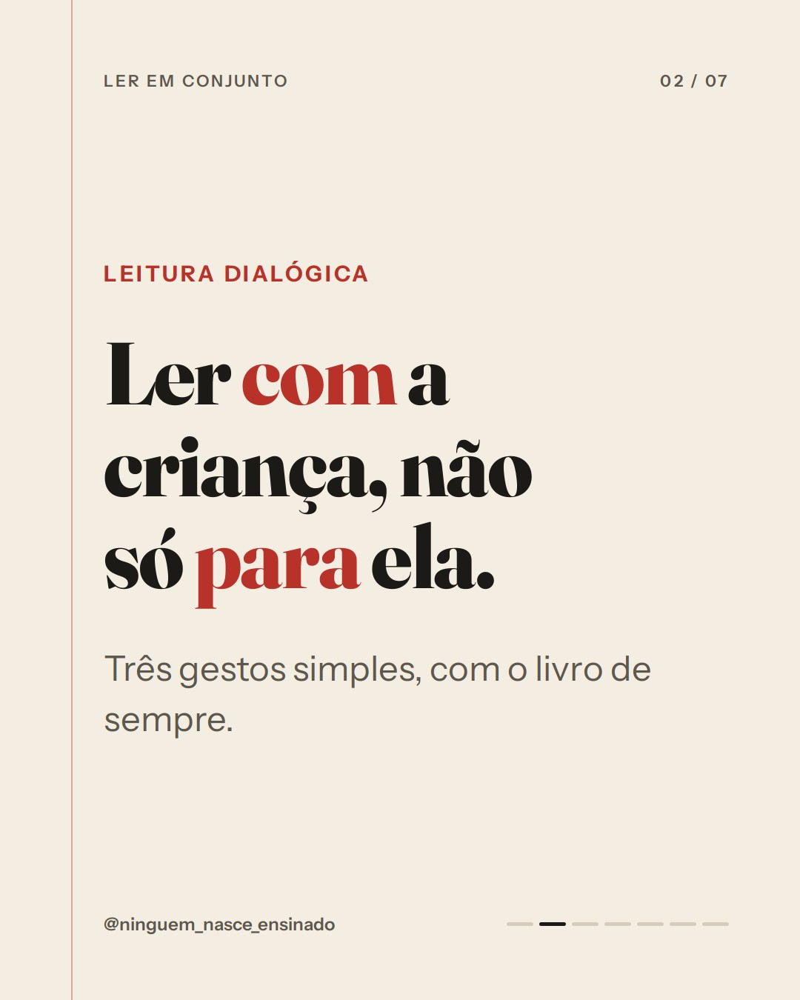
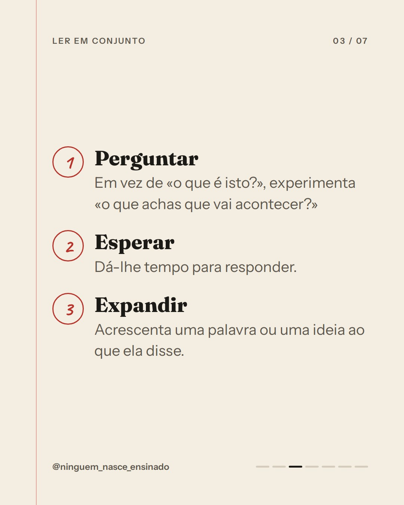
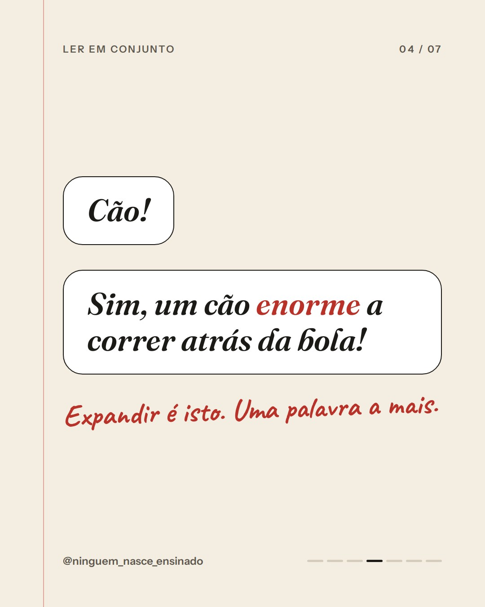
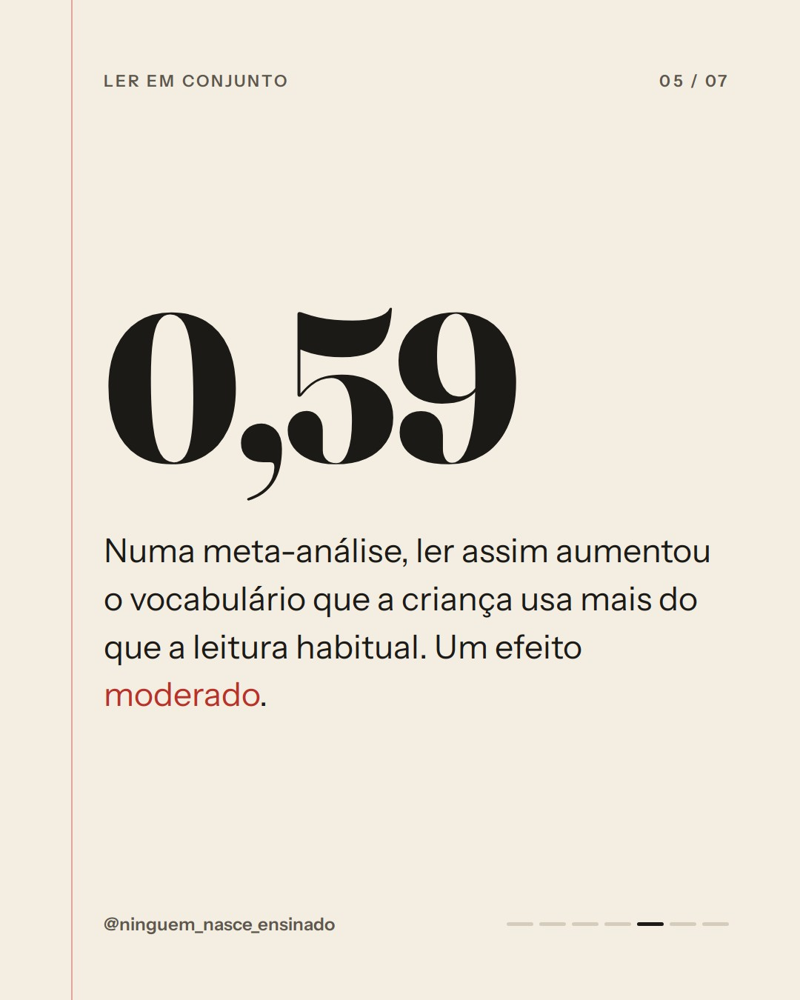
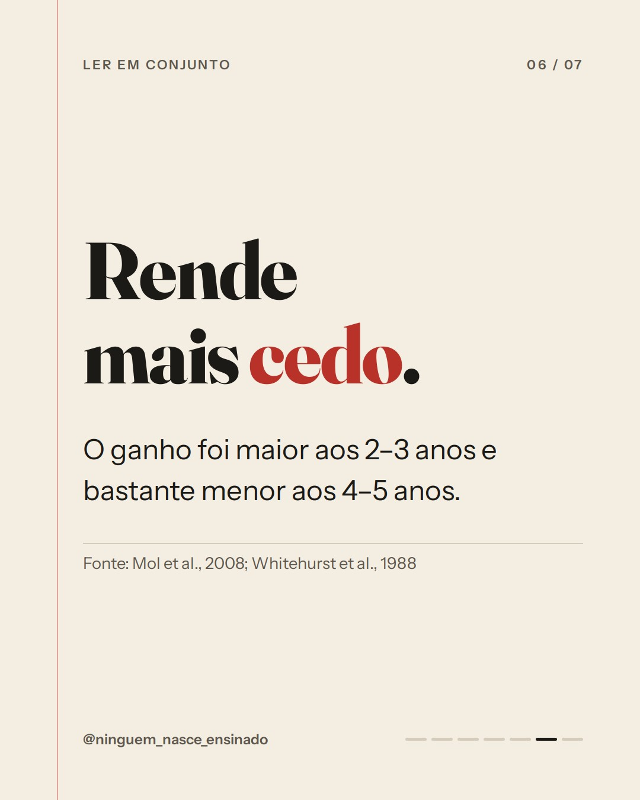
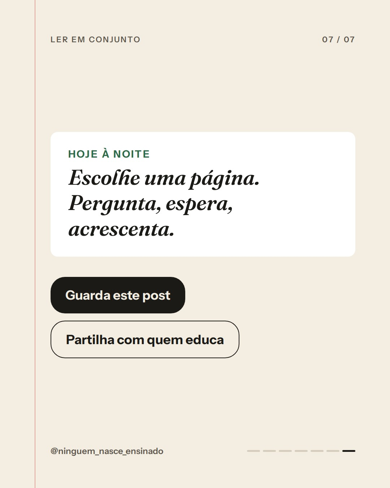

Perguntar, esperar, expandir






Legenda
A história de sempre pode render muito mais palavras.
Na leitura dialógica, o adulto lê COM a criança: faz perguntas abertas, espera pela resposta e acrescenta uma palavra ou uma ideia ao que ela diz. Uma meta-análise sugere que esta forma de ler traz um ganho moderado no vocabulário expressivo, em comparação com a leitura habitual. O efeito foi maior aos 2–3 anos e mais pequeno aos 4–5 anos e em crianças em risco. Os estudos são poucos, pequenos e quase todos em inglês, mas a técnica adapta-se a qualquer livro em português.
Fonte: Mol, Bus, de Jong & Smeets (2008), Early Education and Development; Whitehurst et al. (1988), Developmental Psychology.
#ninguemnasceensinado #leituradialogica #lerhistorias #vocabulario #linguagem #pais #educadores